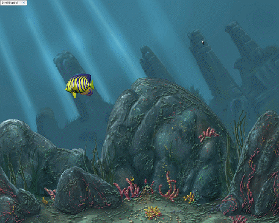

Torque 2D – Fish Demo Tutorial - Part 6
6. Come in at a Random Position
6.1
Adding a random Y position to our script
Now that we have our fish swimming back and forth properly, we can add a couple of things to make it a bit more interesting. One of these things is to place our fish in a random Y position when it flips and swims back across the screen after hitting a world limit. This will give the illusion of another fish swimming in, or at least as though our fish was moving vertically and not just horizontally. If you don't still have it open, open your game.cs script file again. Locate your onWorldLimit() function. It should look like this.
function FishClass::onWorldLimit(%this, %mode, %limit)
{
switch$ (%limit)
{
case "left":
%this.setLinearVelocityX(20);
%this.setFlipX(false);
case "right":
%this.setLinearVelocityX(-20);
%this.setFlipX(true);
}
}
We need to add a call to both the “left” and “right” responses. This call will set the fish's Y position in a random number between the top of the level and just above the ground. Make your function look like this.
function FishClass::onWorldLimit(%this, %mode, %limit)
{
switch$ (%limit)
{
case "left":
%this.setLinearVelocityX(20);
%this.setFlipX(false);
%this.setPositionY(getRandom(-35, 25));
case "right":
%this.setLinearVelocityX(-20);
%this.setFlipX(true);
%this.setPositionY(getRandom(-35, 25));
}
}
Code Sample 6.1.1
We get a random number between -35 and 25 to set our fish's Y position to. This way the fish's Y position will change when it hits the world limit. It will now swim in at a different position than where it left.
Click the Play Level button and you should see your fish swim out of the level and in at a random position (as shown in Figure 6.1.1). Or, just make sure you followed the steps exactly.

Figure 6.1.1